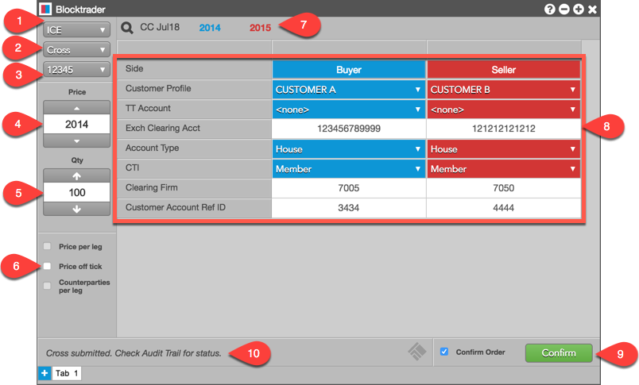
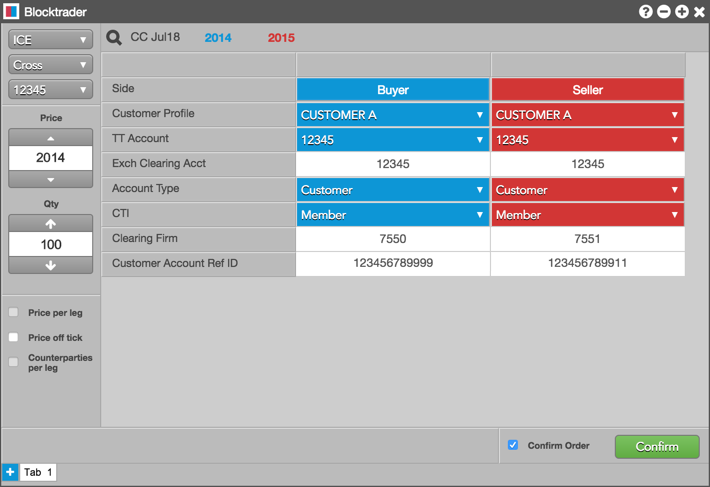
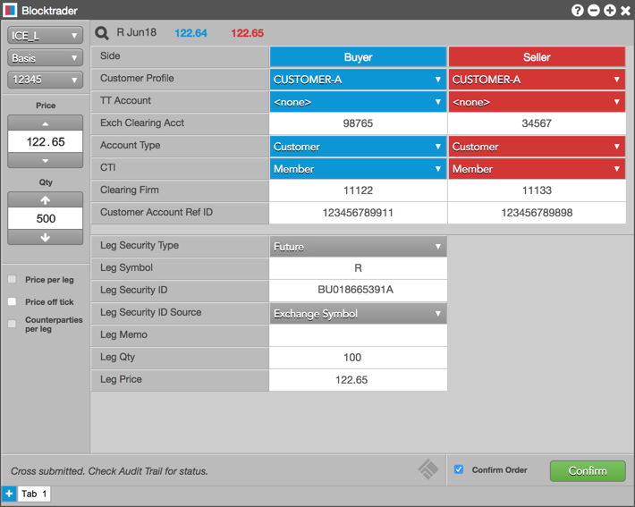

The Blocktrader widget supports entering the following OTC trades on ICE and ICE_L exchanges on TT:
Before submitting an OTC trade, complete the following:
Blocktrader consists of the components needed for submitting OTC trades on ICE and ICE_L.

The image shows the following:
To submit an ICE OTC Trade:
For Basis trades, refer to Blocktrader Fields for Basis Trades on ICE_L.
If Confirm order is checked, confirm the order before submitting it to the exchange.
Cross trades: Upon receiving the order, the exchange broadcasts a request to cross message that appears in the Audit Trail. After the exchange-defined time period (e.g., 10 seconds), the order is submitted.
The table below lists the common fields for submitting OTC trades for ICE and ICE_L.
|
Blocktrader Field |
Value |
Description |
|---|---|---|
|
Side |
Sets the Buyer or Seller | Click a cell to determine the Buyer or Seller in each side of the trade. |
|
Customer Profile |
A drop-down list of available Customer order tag defaults. |
Only customers with Order Profiles defined in Setup appear in the Customer Profile list. This is an optional field. |
|
TT Account |
Sets a specific account for the Buyer or Seller. | This account will be used for the Buyer or Seller instead of the account selected in the order panel. All accounts assigned to the user are listed in the drop-down menu. Required for both sides of the cross trade. |
|
Exch Clearing Account |
Enter the Buyer's or Seller's exchange clearing account value. | This account is a unique user-defined value requested by the trading company’s administrator and created by the clearing firm. The clearing firm sets limits and determines the tradable products for each account. Required for an SMA account. Sent to the exchange as Tag 440. |
|
Account Type |
Select an ICE exchange account code from the drop-down menu. |
Defines the type of account used for order routing and clearing. Select one of the exchanged-defined account management codes from the drop down menu. Required for an LMA account. Sent to the exchange as FIX Tag 9195. |
|
CTI |
Sets the type of user who is placing orders with this account. |
This value is sent to the exchange as FIX Tag 9208. Select one of the customer type identifier (CTI) values from the drop down menu. Required for LMA-US/Canada. |
|
Clearing Firm |
Enter a Clearing firm identifier for each side. |
The clearing firm information is a numeric value created by ICE and assigned to the appropriate clearing firm. Some firms may consist of different regional entities with each assigned a unique ID. This field is required for both sides of the trade. |
|
Customer Account Ref ID |
Enter the Customer account reference identifier for each side. |
Sets the a unique or shared back office ID generated by the trading company and/or clearing firm. This ID is created on the fly and contains a maximum of 12 characters. Firms can assign a unique ID to each trader, share an ID between multiple traders, or assign multiple IDs to a single trader. Sent to the exchange as Tag 9207. The customer account reference ID is optional for SMA, and required for LMA. |
The following example shows an ICE Cross trade (the same fields are also populated for a Guaranteed Cross):

Note: To submit Basis trades, you must first complete the fields listed in Blocktrader Fields for ICE and ICE_L. For Basis trades, you must also complete the additional fields listed in the following table.
|
Blocktrader Field |
Description |
|---|---|
|
Leg Security Type |
Optionally, select one of the following product types: Future, Option, or Spot |
|
Leg Symbol |
Optional if a leg security type is selected. |
|
Leg Security ID |
Optional if a leg security type is selected. |
|
Leg Security ID Source |
The ISIN code for the underlying cash leg. Optional if a leg security type is selected. |
|
Leg Memo |
Optional if a leg security type is selected. |
|
Leg Qty |
Optional if a leg security type is selected. |
|
Leg Price |
Optional if a leg security type is selected. |
The following example shows a Basis trade reported in Blocktrader.
